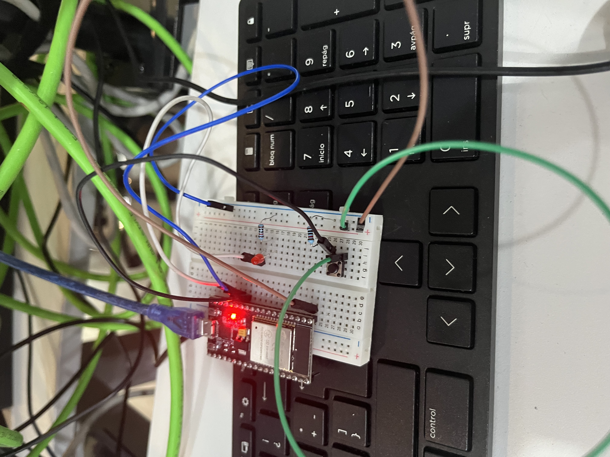

📚 Práctica 1: Control de LED con Pulsador (Entrada Digital)
Un proyecto fundamental para entender cómo un microcontrolador (ESP32) lee información del mundo físico (un botón) y actúa sobre él (un LED).
1) Resumen
- Autor: Juan Carlos Valdés Pérez
- Asignatura: Introducción a la Mecatrónica
- Fecha: 12/09/2025
- Placa: ESP32
- Descripción breve: Un circuito simple que utiliza un pulsador (push button) para controlar el encendido y apagado de un LED, demostrando el uso de pines de entrada y salida digital.
Nota: Este proyecto es la base para cualquier sistema de control que requiera leer un interruptor, un sensor de límite o cualquier señal digital simple.
2) Objetivo del Proyecto
Aprender a configurar los pines de un ESP32 para dos modos diferentes:
- Modo SALIDA (OUTPUT): Para enviar voltaje y encender un LED usando la función
digitalWrite(). - Modo ENTRADA (INPUT): Para leer el estado de un componente externo, en este caso un pulsador, usando la función
digitalRead().
3) Componentes y Requisitos
Hardware - Microcontrolador ESP32 - 1 LED (cualquier color) - 1 Resistencia de 220 Ohms (para proteger el LED) - 1 Pulsador (push button) - Protoboard y Jumpers (cables)
Software - Arduino IDE - Lenguaje de programación: C++
4) Desafíos Clave y Aprendizajes
Desafío: El desafío más común al inicio fue entender la polaridad del LED. Al conectarlo al revés (ánodo y cátodo invertidos), el circuito no funcionaba aunque el código estuviera perfecto.
Aprendizaje:
El aprendizaje clave fue la importancia de verificar el hardware antes de asumir que el error está en el software (código). También aprendí a diferenciar claramente entre pinMode(INPUT) y pinMode(OUTPUT), que son la base para controlar casi cualquier componente.
5) Galería y Demostración
